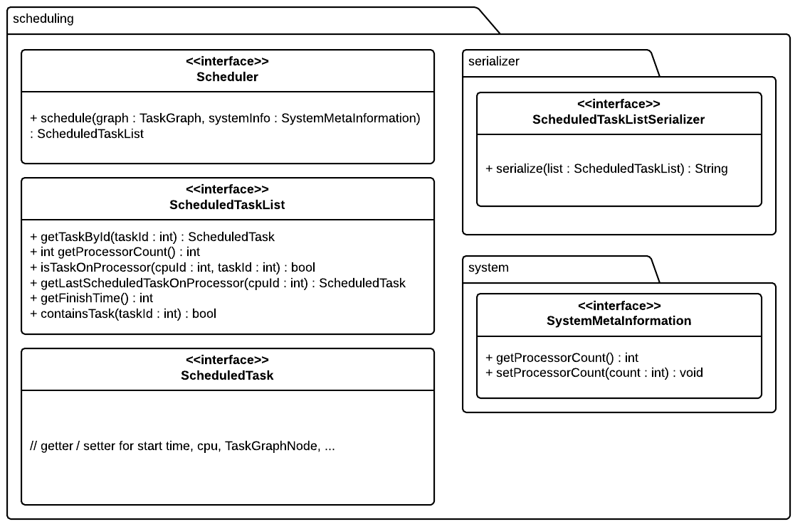

Initial ready pool with first task and its B-Level
Short
starttime cpu_id node_id
Extended:
starttime cpu_id node_id communicationtime computationtime
0 0 0 1 0
1 1 1 2 0
3 1 2 5 0
4 0 3 3 1
8 1 4 10 0
8 0 5 8 0
16 0 6 1 0